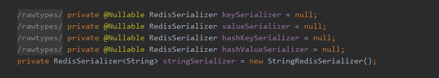

远程连接Redis
需要设置：
- 关闭防火墙/开放端口
- 注释掉 redis.conf 中的：bind 127.0.0.1
- 只需通过从服务器运行的同一主机连接到Redis，从环回接口发送命令’CONFIG SET protected-mode no’来禁用保护模式，但是如果这样做，请确保Redis不能从internet公开访问。使用CONFIG REWRITE将此更改永久化。
- 或者，您可以通过编辑Redis配置文件，将protected-mode选项设置为no，然后重新启动服务器来禁用protected-mode。
- 如果只是为了测试而手动启动服务器，请使用“protected-mode no”选项重新启动服务器。
- 设置绑定地址或身份验证密码。
- 注意：您只需要执行上述操作之一，服务器就可以开始接受来自外部的连接。
Jedis
Jedis是官方推荐的java连接开发工具，使用java操作Redis的中间件
1. 连接测试
1 | // 测试连接 |
Jedis中操作Redis的方法与Redis命令一致
2. 事务测试
1 | Jedis jedis = new Jedis("192.168.88.130", 6379); |
SpringBoot整合
SpringBoot操作数据：spring-data jpa jdbc MongoDB redis
使用配置时应尽量使用lettuce
1. 整合测试
1.0 说明：在SpringBoot 2.X 之后原来的jedis被替换为了lettuce
jedis：采用的是直连，多个线程操作的话，是不安全的，如果想要避免不安全，需要使用jedis pool连接池，更像 BIO 模式
lettuce：采用netty，实例可以在多个线程中进行共享，不存在线程不安全的情况，可以减少线程数据，更像 NIO 模式
1.1 源码分析
SpringBoot 的所有配置类，都有一个自动配置类
所有配置类都会绑定一个properties 配置文件
可在 org.springframework.boot:spring-boot-autoconfigure -> META-INF -> spring.factories 中查看关于redis自动配置类源码 RedisAutoConfiguration
RedisAutoConfiguration -> RedisProperties 可查看具体配置信息
1 |
|
1.2 创建项目
1.1.1 新创建项目时
创建项目时，可直接勾选springboot整合redis的依赖

1.1.2 旧项目中，引入依赖
1 | <dependency> |
1.3 添加配置
1 | spring: |
1.4 使用
存储中文时，可能会存在各种问题
此时需要值的序列化
1 | /* |
2. 值的序列化
打开 RedisTemplate 类可以看到，其即为值得序列化

向下滑动，可以看到默认的序列化方式为Jdk序列化，其会让字符串转义

存入未序列化对象时，会报错
1 | try { |
3. 自定义RedisTemplate
创建RedisConfig文件
复制步骤1.1 源码中的RedisTemplate的配置，并删除注解
@ConditionalOnMissingBean(name = {"redisTemplate"})模板
1
2
3
4
5
6
7
8
9
10
11
12
13
14
15
16
17
18
19
20
21
22
23
24
25
26
27
28
29
30
31
32
33
34
35
36
37
38
39
40
41
42
43
44
45
46
47
48import com.fasterxml.jackson.annotation.JsonAutoDetect;
import com.fasterxml.jackson.annotation.PropertyAccessor;
import com.fasterxml.jackson.databind.ObjectMapper;
import org.springframework.context.annotation.Bean;
import org.springframework.context.annotation.Configuration;
import org.springframework.data.redis.connection.RedisConnectionFactory;
import org.springframework.data.redis.core.RedisTemplate;
import org.springframework.data.redis.serializer.Jackson2JsonRedisSerializer;
import org.springframework.data.redis.serializer.StringRedisSerializer;
import java.net.UnknownHostException;
public class RedisConfig {
// 固定模板
public RedisTemplate<String, Object> myRedisTemplate(RedisConnectionFactory redisConnectionFactory) throws UnknownHostException {
// 为了开发方便一般直接使用 <String, Object>
RedisTemplate<String, Object> template = new RedisTemplate<>();
template.setConnectionFactory(redisConnectionFactory);
// Json序列化配置
Jackson2JsonRedisSerializer jackson2JsonRedisSerializer = new Jackson2JsonRedisSerializer(Object.class);
ObjectMapper om = new ObjectMapper();
om.setVisibility(PropertyAccessor.ALL, JsonAutoDetect.Visibility.ANY);
om.enableDefaultTyping(ObjectMapper.DefaultTyping.NON_FINAL);
jackson2JsonRedisSerializer.setObjectMapper(om);
// String 的序列化
StringRedisSerializer stringRedisSerializer = new StringRedisSerializer();
// key 采用String的序列化方式
template.setKeySerializer(stringRedisSerializer);
// value 采用jackson的序列化方式
template.setValueSerializer(jackson2JsonRedisSerializer);
// hash的key 采用String的序列化方式
template.setHashKeySerializer(stringRedisSerializer);
// hash的value 采用jackson的序列化方式
template.setHashValueSerializer(jackson2JsonRedisSerializer);
template.afterPropertiesSet();
template.setConnectionFactory(redisConnectionFactory);
return template;
}
}修改注入方式
1
2
3
4
5
6
7
8
9
// 声明具体注入的对象的名称，使注入没有歧义
private RedisTemplate redisTemplate;
// 新注入方式
private RedisTemplate<String, Object> redisTemplate;
工具类
1
2
3
4
5
6
7
8
9
10
11
12
13
14
15
16
17
18
19
20
21
22
23
24
25
26
27
28
29
30
31
32
33
34
35
36
37
38
39
40
41
42
43
44
45
46
47
48
49
50
51
52
53
54
55
56
57
58
59
60
61
62
63
64
65
66
67
68
69
70
71
72
73
74
75
76
77
78
79
80
81
82
83
84
85
86
87
88
89
90
91
92
93
94
95
96
97
98
99
100
101
102
103
104
105
106
107
108
109
110
111
112
113
114
115
116
117
118
119
120
121
122
123
124
125
126
127
128
129
130
131
132
133
134
135
136
137
138
139
140
141
142
143
144
145
146
147
148
149
150
151
152
153
154
155
156
157
158
159
160
161
162
163
164
165
166
167
168
169
170
171
172
173
174
175
176
177
178
179
180
181
182
183
184
185
186
187
188
189
190
191
192
193
194
195
196
197
198
199
200
201
202
203
204
205
206
207
208
209
210
211
212
213
214
215
216
217
218
219
220
221
222
223
224
225
226
227
228
229
230
231
232
233
234
235
236
237
238
239
240
241
242
243
244
245
246
247
248
249
250
251
252
253
254
255
256
257
258
259
260
261
262
263
264
265
266
267
268
269
270
271
272
273
274
275
276
277
278
279
280
281
282
283
284
285
286
287
288
289
290
291
292
293
294
295
296
297
298
299
300
301
302
303
304
305
306
307
308
309
310
311
312
313
314
315
316
317
318
319
320
321
322
323
324
325
326
327
328
329
330
331
332
333
334
335
336
337
338
339
340
341
342
343
344
345
346
347
348
349
350
351
352
353
354
355
356
357
358
359
360
361
362
363
364
365
366
367
368
369
370
371
372
373
374
375
376
377
378
379
380
381
382
383
384
385
386
387
388
389
390
391
392
393
394
395
396
397
398
399
400
401
402
403
404
405
406
407
408
409
410
411
412
413
414
415
416
417
418
419
420
421
422
423
424
425
426
427
428
429
430
431
432
433
434
435
436
437
438
439
440
441
442
443
444
445
446
447
448
449
450
451
452
453
454
455
456
457
458
459
460
461
462
463
464
465
466
467
468
469
470
471
472
473
474
475
476
477
478
479
480
481
482
483
484
485
486
487
488
489
490
491
492
493
494
495
496
497
498
499
500
501
502
503
504
505
506
507
508
509
510
511
512
513
514
515
516
517
518
519
520
521
522
523
524
525
526
527
528
529
530
531
532
533
534
535
536
537
538
539
540
541
542
543
544
545
546
547
548
549
550
551
552
553
554
555
556import org.springframework.beans.factory.annotation.Autowired;
import org.springframework.data.redis.core.RedisTemplate;
import org.springframework.stereotype.Component;
import org.springframework.util.CollectionUtils;
import java.util.List;
import java.util.Map;
import java.util.Set;
import java.util.concurrent.TimeUnit;
public final class RedisUtils {
private RedisTemplate<String, Object> redisTemplate;
// =============================common============================
/**
* 指定缓存失效时间
* @param key 键
* @param time 时间(秒)
*/
public boolean expire(String key, long time) {
try {
if (time > 0) {
redisTemplate.expire(key, time, TimeUnit.SECONDS);
}
return true;
} catch (Exception e) {
e.printStackTrace();
return false;
}
}
/**
* 根据key 获取过期时间
* @param key 键 不能为null
* @return 时间(秒) 返回0代表为永久有效
*/
public long getExpire(String key) {
return redisTemplate.getExpire(key, TimeUnit.SECONDS);
}
/**
* 判断key是否存在
* @param key 键
* @return true 存在 false不存在
*/
public boolean hasKey(String key) {
try {
return redisTemplate.hasKey(key);
} catch (Exception e) {
e.printStackTrace();
return false;
}
}
/**
* 删除缓存
* @param key 可以传一个值 或多个
*/
public void del(String... key) {
if (key != null && key.length > 0) {
if (key.length == 1) {
redisTemplate.delete(key[0]);
} else {
redisTemplate.delete(CollectionUtils.arrayToList(key));
}
}
}
// ============================String=============================
/**
* 普通缓存获取
* @param key 键
* @return 值
*/
public Object get(String key) {
return key == null ? null : redisTemplate.opsForValue().get(key);
}
/**
* 普通缓存放入
* @param key 键
* @param value 值
* @return true成功 false失败
*/
public boolean set(String key, Object value) {
try {
redisTemplate.opsForValue().set(key, value);
return true;
} catch (Exception e) {
e.printStackTrace();
return false;
}
}
/**
* 普通缓存放入并设置时间
* @param key 键
* @param value 值
* @param time 时间(秒) time要大于0 如果time小于等于0 将设置无限期
* @return true成功 false 失败
*/
public boolean set(String key, Object value, long time) {
try {
if (time > 0) {
redisTemplate.opsForValue().set(key, value, time, TimeUnit.SECONDS);
} else {
set(key, value);
}
return true;
} catch (Exception e) {
e.printStackTrace();
return false;
}
}
/**
* 递增
* @param key 键
* @param delta 要增加几(大于0)
*/
public long incr(String key, long delta) {
if (delta < 0) {
throw new RuntimeException("递增因子必须大于0");
}
return redisTemplate.opsForValue().increment(key, delta);
}
/**
* 递减
* @param key 键
* @param delta 要减少几(小于0)
*/
public long decr(String key, long delta) {
if (delta < 0) {
throw new RuntimeException("递减因子必须大于0");
}
return redisTemplate.opsForValue().increment(key, -delta);
}
// ================================Map=================================
/**
* HashGet
* @param key 键 不能为null
* @param item 项 不能为null
*/
public Object hget(String key, String item) {
return redisTemplate.opsForHash().get(key, item);
}
/**
* 获取hashKey对应的所有键值
* @param key 键
* @return 对应的多个键值
*/
public Map<Object, Object> hmget(String key) {
return redisTemplate.opsForHash().entries(key);
}
/**
* HashSet
* @param key 键
* @param map 对应多个键值
*/
public boolean hmset(String key, Map<String, Object> map) {
try {
redisTemplate.opsForHash().putAll(key, map);
return true;
} catch (Exception e) {
e.printStackTrace();
return false;
}
}
/**
* HashSet 并设置时间
* @param key 键
* @param map 对应多个键值
* @param time 时间(秒)
* @return true成功 false失败
*/
public boolean hmset(String key, Map<String, Object> map, long time) {
try {
redisTemplate.opsForHash().putAll(key, map);
if (time > 0) {
expire(key, time);
}
return true;
} catch (Exception e) {
e.printStackTrace();
return false;
}
}
/**
* 向一张hash表中放入数据,如果不存在将创建
*
* @param key 键
* @param item 项
* @param value 值
* @return true 成功 false失败
*/
public boolean hset(String key, String item, Object value) {
try {
redisTemplate.opsForHash().put(key, item, value);
return true;
} catch (Exception e) {
e.printStackTrace();
return false;
}
}
/**
* 向一张hash表中放入数据,如果不存在将创建
*
* @param key 键
* @param item 项
* @param value 值
* @param time 时间(秒) 注意:如果已存在的hash表有时间,这里将会替换原有的时间
* @return true 成功 false失败
*/
public boolean hset(String key, String item, Object value, long time) {
try {
redisTemplate.opsForHash().put(key, item, value);
if (time > 0) {
expire(key, time);
}
return true;
} catch (Exception e) {
e.printStackTrace();
return false;
}
}
/**
* 删除hash表中的值
*
* @param key 键 不能为null
* @param item 项 可以使多个 不能为null
*/
public void hdel(String key, Object... item) {
redisTemplate.opsForHash().delete(key, item);
}
/**
* 判断hash表中是否有该项的值
*
* @param key 键 不能为null
* @param item 项 不能为null
* @return true 存在 false不存在
*/
public boolean hHasKey(String key, String item) {
return redisTemplate.opsForHash().hasKey(key, item);
}
/**
* hash递增 如果不存在,就会创建一个 并把新增后的值返回
*
* @param key 键
* @param item 项
* @param by 要增加几(大于0)
*/
public double hincr(String key, String item, double by) {
return redisTemplate.opsForHash().increment(key, item, by);
}
/**
* hash递减
*
* @param key 键
* @param item 项
* @param by 要减少记(小于0)
*/
public double hdecr(String key, String item, double by) {
return redisTemplate.opsForHash().increment(key, item, -by);
}
// ============================set=============================
/**
* 根据key获取Set中的所有值
* @param key 键
*/
public Set<Object> sGet(String key) {
try {
return redisTemplate.opsForSet().members(key);
} catch (Exception e) {
e.printStackTrace();
return null;
}
}
/**
* 根据value从一个set中查询,是否存在
*
* @param key 键
* @param value 值
* @return true 存在 false不存在
*/
public boolean sHasKey(String key, Object value) {
try {
return redisTemplate.opsForSet().isMember(key, value);
} catch (Exception e) {
e.printStackTrace();
return false;
}
}
/**
* 将数据放入set缓存
*
* @param key 键
* @param values 值 可以是多个
* @return 成功个数
*/
public long sSet(String key, Object... values) {
try {
return redisTemplate.opsForSet().add(key, values);
} catch (Exception e) {
e.printStackTrace();
return 0;
}
}
/**
* 将set数据放入缓存
*
* @param key 键
* @param time 时间(秒)
* @param values 值 可以是多个
* @return 成功个数
*/
public long sSetAndTime(String key, long time, Object... values) {
try {
Long count = redisTemplate.opsForSet().add(key, values);
if (time > 0)
expire(key, time);
return count;
} catch (Exception e) {
e.printStackTrace();
return 0;
}
}
/**
* 获取set缓存的长度
*
* @param key 键
*/
public long sGetSetSize(String key) {
try {
return redisTemplate.opsForSet().size(key);
} catch (Exception e) {
e.printStackTrace();
return 0;
}
}
/**
* 移除值为value的
*
* @param key 键
* @param values 值 可以是多个
* @return 移除的个数
*/
public long setRemove(String key, Object... values) {
try {
Long count = redisTemplate.opsForSet().remove(key, values);
return count;
} catch (Exception e) {
e.printStackTrace();
return 0;
}
}
// ===============================list=================================
/**
* 获取list缓存的内容
*
* @param key 键
* @param start 开始
* @param end 结束 0 到 -1代表所有值
*/
public List<Object> lGet(String key, long start, long end) {
try {
return redisTemplate.opsForList().range(key, start, end);
} catch (Exception e) {
e.printStackTrace();
return null;
}
}
/**
* 获取list缓存的长度
*
* @param key 键
*/
public long lGetListSize(String key) {
try {
return redisTemplate.opsForList().size(key);
} catch (Exception e) {
e.printStackTrace();
return 0;
}
}
/**
* 通过索引 获取list中的值
*
* @param key 键
* @param index 索引 index>=0时， 0 表头，1 第二个元素，依次类推；index<0时，-1，表尾，-2倒数第二个元素，依次类推
*/
public Object lGetIndex(String key, long index) {
try {
return redisTemplate.opsForList().index(key, index);
} catch (Exception e) {
e.printStackTrace();
return null;
}
}
/**
* 将list放入缓存
*
* @param key 键
* @param value 值
*/
public boolean lSet(String key, Object value) {
try {
redisTemplate.opsForList().rightPush(key, value);
return true;
} catch (Exception e) {
e.printStackTrace();
return false;
}
}
/**
* 将list放入缓存
* @param key 键
* @param value 值
* @param time 时间(秒)
*/
public boolean lSet(String key, Object value, long time) {
try {
redisTemplate.opsForList().rightPush(key, value);
if (time > 0)
expire(key, time);
return true;
} catch (Exception e) {
e.printStackTrace();
return false;
}
}
/**
* 将list放入缓存
*
* @param key 键
* @param value 值
* @return
*/
public boolean lSet(String key, List<Object> value) {
try {
redisTemplate.opsForList().rightPushAll(key, value);
return true;
} catch (Exception e) {
e.printStackTrace();
return false;
}
}
/**
* 将list放入缓存
*
* @param key 键
* @param value 值
* @param time 时间(秒)
* @return
*/
public boolean lSet(String key, List<Object> value, long time) {
try {
redisTemplate.opsForList().rightPushAll(key, value);
if (time > 0)
expire(key, time);
return true;
} catch (Exception e) {
e.printStackTrace();
return false;
}
}
/**
* 根据索引修改list中的某条数据
*
* @param key 键
* @param index 索引
* @param value 值
* @return
*/
public boolean lUpdateIndex(String key, long index, Object value) {
try {
redisTemplate.opsForList().set(key, index, value);
return true;
} catch (Exception e) {
e.printStackTrace();
return false;
}
}
/**
* 移除N个值为value
*
* @param key 键
* @param count 移除多少个
* @param value 值
* @return 移除的个数
*/
public long lRemove(String key, long count, Object value) {
try {
Long remove = redisTemplate.opsForList().remove(key, count, value);
return remove;
} catch (Exception e) {
e.printStackTrace();
return 0;
}
}
}